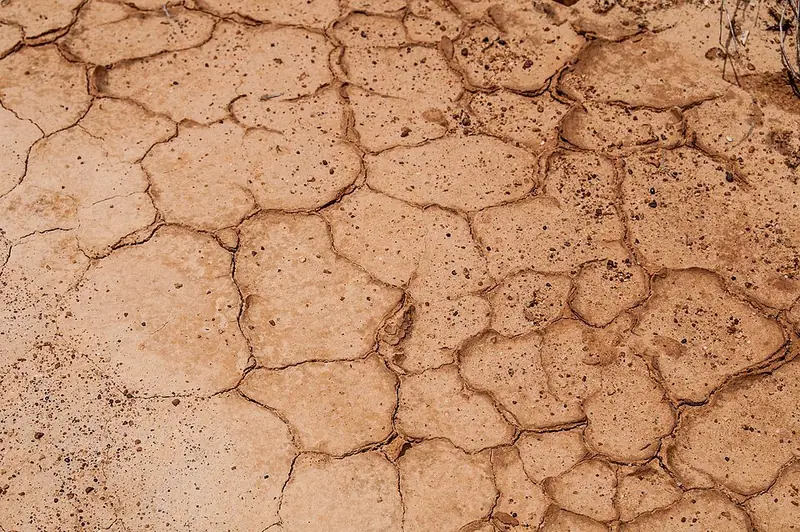
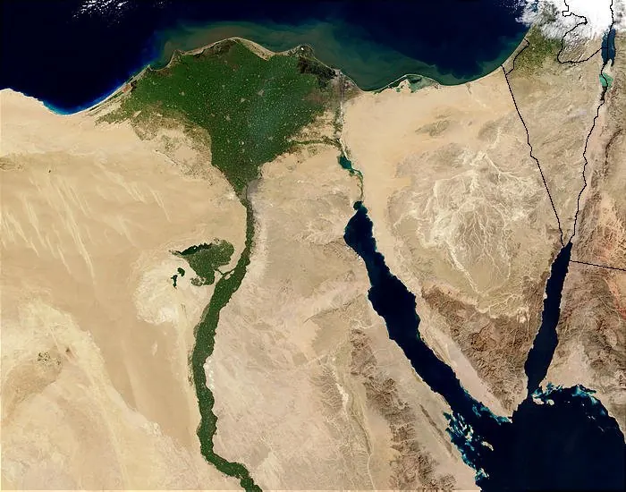

Cambridge Primary Checkpoint · Science 0097 · Stage 6 · Earth and space
Types of Soil
Sandy, clay and loamy soils — what soil is made of, how to classify and test it, and how changes to soil can help or harm plants, with a Checkpoint-style quiz.
British & IGCSE › Checkpoint 6 › Checkpoint 6 Science — Complete Course
- Know that there are different types of soil, and that soils can be classified (sorted) by how much clay, sand and organic matter (humus) they contain (6ESp.03).
- Know that the make-up of a soil can change, and that these changes can help or harm plant growth (6ESp.04).
- Skills used on this page: fair testing (drainage test), observing (jar test), recording results in a table, drawing and reading a bar chart, making a conclusion.
Key words
| Word / phrase | Meaning / use |
|---|---|
| soil | تربة — the loose top layer of the ground that plants grow in |
| particle | جسيم / حبيبة — a very small piece |
| sand | رمل — the largest soil particles; feel gritty |
| silt | طمي — medium-sized particles; feel smooth and silky |
| clay | طين — the smallest particles; sticky when wet |
| organic matter / humus | مادة عضوية / دُبال — dark material made from dead plants and animals that have rotted (decayed) |
| loam | تربة طميية (مخلوطة) — a mixture of sand, silt, clay and humus; good for most plants |
| drain / drainage | تصريف — how quickly water passes through the soil |
| waterlogged | مشبّعة بالماء — so full of water that there is no air for the roots |
| nutrients (minerals) | عناصر غذائية / أملاح معدنية — substances in soil that plants need to grow healthily |
| fertiliser / compost | سماد / سماد عضوي (كومبوست) — added to soil to give it more nutrients or organic matter |
| erosion | تعرية / انجراف — soil being carried away by wind or water |
1. What is soil made of?
Soil looks simple, but it is a mixture of several things:
| Part of soil | Where it comes from | Why it matters for plants |
|---|---|---|
| Rock particles (sand, silt, clay) | Rock broken down into small pieces by the weather over a very long time | Hold the roots in place; the size of the particles controls drainage |
| Organic matter (humus) | Dead leaves, roots, animals and animal waste that have rotted | Gives nutrients; helps soil hold water; dark colour |
| Water | Rain and irrigation | Plants take in water through their roots |
| Air | Fills the spaces between the particles | Roots need oxygen from the air in the soil |
| Living things | Earthworms, insects, bacteria, fungi | Break down dead material into humus; worms mix the soil and make tunnels |
2. Sand, silt and clay — the particle sizes
Soil scientists sort the rock particles in soil by size. The size of the particles changes how the soil feels and how water moves through it.
| Particle | Size | How it feels |
|---|---|---|
| Sand | Largest — about 0.05 mm to 2 mm; you can see single grains | Gritty and rough; falls apart |
| Silt | Medium — too small to see single grains | Smooth and silky, like flour |
| Clay | Smallest — less than 0.002 mm | Sticky when wet; can be rolled and shaped; hard and cracked when dry |
3. Types of soil
Soils are classified (sorted into types) by how much clay, sand and organic matter they contain.
| Type of soil | What it contains | Drainage and air | Nutrients | Good for |
|---|---|---|---|---|
| Sandy soil | Mostly sand; little clay or humus | Water drains away very quickly; lots of air; dries out fast | Few — nutrients are washed out by the water | Plants that need little water, e.g. cactus, date palms; root crops like carrots |
| Clay soil | Mostly clay | Water drains very slowly; little air; can become waterlogged; cracks when dry | Many — but roots find it hard to push through | Plants with strong roots; rice; becomes very good when organic matter is added |
| Loam (loamy soil) | A balanced mixture of sand, silt and clay with plenty of humus | Holds enough water but still drains; plenty of air | Many | Most crops and garden plants — the best soil for farming |
| Peaty soil | A very high amount of organic matter | Holds a lot of water | Can be poor because the soil is acidic | Some plants that like wet, acidic soil |
Why do sand and clay behave so differently? Sand grains are large, so the spaces between them are large — water runs straight through and air can get in. Clay particles are tiny and pack tightly together, so the spaces are tiny — water moves through very slowly and gets trapped.

The farmland of the Nile Valley and Delta is dark soil rich in silt and clay that the river carried and left behind over thousands of years — the ancient Egyptians called their land 'Kemet', the black land. Away from the river, most of Egypt is sandy desert soil, which drains quickly and has few nutrients.

4. Testing soils
Test 1 — the feel test. Take a little damp soil and rub it between your fingers. Gritty → mostly sand. Smooth and silky → mostly silt. Sticky, and can be rolled into a long thin sausage → mostly clay.
Test 2 — the jar test (observing). This test separates the parts of the soil so you can see how much of each the soil contains.
- Put soil in a clear jar until it is about one-third full.
- Add water until the jar is nearly full, put the lid on and shake it well.
- Leave it to settle for a day without moving it.
- Observe the layers. The heaviest, largest particles settle first at the bottom; the smallest (clay) settle last on top. Organic matter (humus) is light and floats.
The thickness of each layer tells you how much of that particle the soil contains. A thick sand layer → sandy soil; a thick clay layer → clay soil.
Test 3 — the drainage test (fair test). Which soil lets water drain through fastest?
| Variable | In this test |
|---|---|
| Independent variable (what we change) | The type of soil |
| Dependent variable (what we measure) | The volume of water that drains through in 10 minutes (ml) |
| Control variables (what we keep the same) | The mass of soil (e.g. 100 g); the volume of water poured in (100 ml); the time (10 minutes); the same size funnel and filter paper; the soils equally dry at the start |
| Type of soil | Water poured in (ml) | Water collected after 10 min (ml) | Water held by the soil (ml) |
|---|---|---|---|
| Sandy | 100 | 82 | 100 − 82 = 18 |
| Loam | 100 | 60 | 100 − 60 = 40 |
| Clay | 100 | 24 | 100 − 24 = 76 |
Conclusion: sandy soil drains fastest because its large particles have large spaces between them; clay soil drains slowest and holds the most water because its tiny particles are tightly packed. To make the results more reliable, repeat each test three times and find the mean.
5. Soil can change
The make-up (composition) of a soil is not fixed. Living things, people and the weather can all change it. Some changes support (help) plant growth and some hinder (harm) it.
| Change | What happens to the soil | Effect on plants |
|---|---|---|
| Adding compost or animal manure | More organic matter and nutrients; sandy soil holds more water; clay soil becomes more open and drains better | Supports growth |
| Leaves and dead animals rot into the soil | More humus and nutrients | Supports growth |
| Earthworms | Mix the layers, pull leaves down, make tunnels for air and water | Supports growth |
| Adding sand to heavy clay soil | Larger spaces, better drainage and more air | Supports growth |
| Adding fertiliser | Replaces the nutrients that crops have used | Supports growth (too much can harm living things) |
| A river flood leaves silt on the fields | Adds fine, nutrient-rich particles | Supports growth |
| Growing crops year after year without adding anything | Nutrients are used up and removed with the harvest | Hinders growth |
| Erosion by wind or heavy rain | The fertile top layer of soil is blown or washed away | Hinders growth |
| Too much salt (e.g. irrigation water evaporates and leaves salt behind) | The soil becomes salty | Hinders growth — roots find it hard to take in water |
| Heavy machines or many feet pressing the ground | Soil is squashed (compacted); fewer air spaces; poor drainage | Hinders growth |
| Pollution (oil, chemicals, rubbish) | Harmful substances in the soil | Hinders growth; can kill soil organisms |
For thousands of years the Nile flooded every summer and left a fresh layer of fertile silt on the fields. Since the Aswan High Dam was built, most of the silt is trapped behind the dam in Lake Nasser, so farmers must add fertiliser to replace the nutrients. New farms in the desert improve sandy soil by adding compost so that it holds more water and nutrients.
- التربة خليط من: حبيبات صخور (رمل وطمي وطين) + مادة عضوية (دُبال) + ماء + هواء + كائنات حية.
- الرمل حبيباته كبيرة ← الماء بيعدّي بسرعة (صرف سريع) والتربة بتنشف. الطين حبيباته صغيرة جدًا ومتلاصقة ← بيحتفظ بالماء وممكن يغرق الجذور.
- التربة الطميية (loam) خليط متوازن + دبال كتير ← أحسن تربة لمعظم النباتات.
- التربة ممكن تتغير: الكومبوست والديدان بيحسّنوها، والتعرية والملوحة والتلوث بيضرّوا النبات.
Worked examples
Worked example 1 — Mariam rubs three damp soil samples between her fingers. Sample K feels gritty and falls apart. Sample L feels sticky and can be rolled into a thin sausage. Sample M is dark, crumbly and has bits of rotted leaves in it. Name the type of soil for each sample. [3 marks]
- K → sandy soil (gritty = large sand grains).
- L → clay soil (sticky and can be shaped = tiny clay particles).
- M → a soil with a lot of organic matter (humus) — loam or peaty soil (dark, rotted leaves).
Worked example 2 — Use the drainage results above. (a) How much water did the loam hold? [1] (b) Which soil would be best for a cactus? Give a reason. [2]
- (a) 100 − 60 = 40 ml.
- (b) Sandy soil (1 mark). It drains quickly so the soil does not stay wet; cacti need little water (1 mark).
Common mistake: subtracting the wrong way round. Water held = water poured in − water collected.
Worked example 3 — In a jar test, why does sand settle at the bottom and clay settle on top? [2 marks]
- Sand particles are larger / heavier, so they sink fastest (1 mark).
- Clay particles are the smallest / lightest, so they sink slowest and settle last, on top (1 mark).
Worked example 4 — A farmer's field has sandy soil. Her plants often wilt. Explain how adding compost would help. [2 marks]
- Compost adds organic matter (humus), which holds water, so the soil does not dry out so fast (1 mark).
- It also adds nutrients that the plants need to grow (1 mark).
Worked example 5 — Youssef plans a drainage test on two soils. Name the independent variable, the dependent variable and two control variables. [3 marks]
- Independent: the type of soil (1 mark).
- Dependent: the volume of water that drains through in a set time (or the time for the water to drain) (1 mark).
- Control (any two, 1 mark): same mass of soil / same volume of water / same time / same funnel and filter paper.
- Saying clay soil drains fast because it is 'hard'. Clay drains slowly because its tiny particles leave tiny spaces.
- Thinking sandy soil is rich in nutrients. Water rushing through sandy soil washes nutrients away.
- Mixing up sand, silt and clay sizes: sand largest, silt medium, clay smallest.
- Forgetting the air in soil — roots need oxygen, which is why waterlogged soil harms plants.
- In the jar test, saying the smallest particles sink first. The largest particles settle first, at the bottom.
- Calling a drainage test fair without keeping the mass of soil and volume of water the same.
- Classify a soil from its description, from a jar-test diagram, or from a table of its sand, clay and organic content.
- Investigation questions: name the variables, suggest how to make the test fair, read a results table, calculate water held (poured in − collected), say which soil drains fastest.
- Graphs: draw or read a bar chart (soil type is a category, so the bars do not touch).
- Explain a property: always link it to particle size and the spaces between particles.
- Soil change questions: say whether a change helps or harms plants and why (more nutrients, more water held, less air, nutrients removed…).
Practice
- Soil = rock particles (sand, silt, clay) + organic matter (humus) + water + air + living things.
- Particle size: sand largest (gritty), silt medium (silky), clay smallest (sticky).
- Sandy soil drains fast, dries out, few nutrients. Clay soil drains slowly, holds water, can be waterlogged. Loam = balanced mix + humus, best for most plants.
- Drainage test: change the soil type; measure water collected; keep mass of soil, volume of water and time the same. Water held = poured in − collected.
- Soil can change: compost, humus, worms and silt support growth; erosion, used-up nutrients, salt, compaction and pollution hinder it.
All pages in this course
Start here
- Checkpoint 6 Science: The Test and How to Prepare
- Thinking and Working Scientifically: Investigations, Variables, Tables and Graphs
Biology
- The Heart and Circulatory System
- The Lungs and Respiratory System
- Human Reproductive System and Puberty
- Diseases, Hygiene and the Body's Defences
- Food Chains, Food Webs, Energy and Toxins
Chemistry
- Properties of Substances: Melting and Boiling Points, Gases, Conductors
- Reversible Changes and Dissolving
- Boiling and Evaporation
- Chemical Reactions: Reactants, Products and Evidence
Physics
- Mass, Weight and Gravity
- Force Diagrams and Forces on Moving Objects
- Floating and Sinking
- Light: Reflection and Refraction
- Electric Circuits, Symbols, Series and Parallel
Earth and space
Practice tests